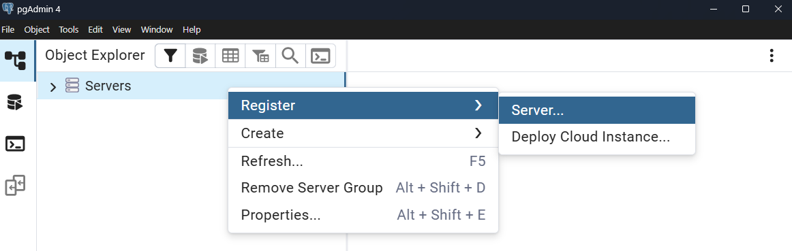
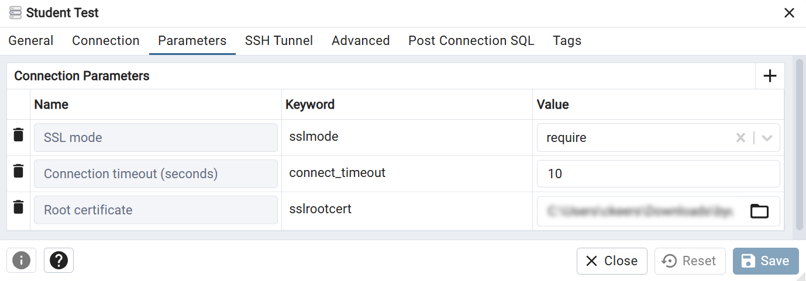
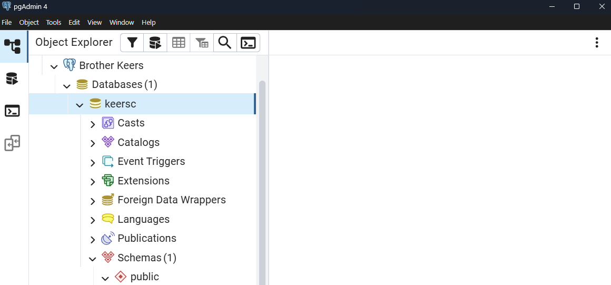
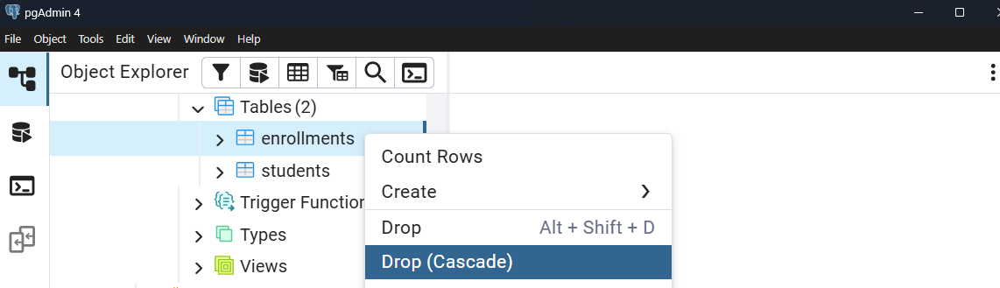

Introdução ao pgAdmin e Operações Básicas de Banco de Dados
Nesta tarefa, você aprenderá a se conectar a um banco de dados PostgreSQL usando pgAdmin, configurar sua conexão para focar em seu próprio banco de dados e executar operações SQL básicas. Você criará tabelas, inserirá dados e explorará diferentes métodos para excluir registros e objetos do banco de dados.
O pgAdmin é uma ferramenta de administração baseada em web para bancos de dados PostgreSQL. Ele fornece uma interface gráfica que torna o gerenciamento do banco de dados mais intuitivo do que trabalhar apenas com ferramentas de linha de comando. Compreender como usar o pgAdmin de forma eficaz tornará seu fluxo de trabalho de desenvolvimento de banco de dados muito mais eficiente.
O Desafio de Múltiplos Bancos de Dados
Quando você se conecta a um servidor PostgreSQL usando o pgAdmin, você normalmente verá todos os bancos de dados naquele servidor — incluindo bancos de dados do sistema e aqueles pertencentes a outros usuários. Esta é uma escolha de design deliberada no PostgreSQL. Embora você não possa acessar bancos de dados dos quais não é proprietário, visualizá-los na interface pode ser uma distração e confuso, especialmente quando você só precisa trabalhar com seu próprio banco de dados. Em ambientes compartilhados, como salas de aula ou servidores de desenvolvimento, isso pode tornar a navegação mais desafiadora e aumentar o risco de selecionar acidentalmente o banco de dados errado.
Além disso, trabalhar diretamente com comandos SQL por meio de uma interface gráfica ajuda a preencher a lacuna entre o trabalho de banco de dados puramente em linha de comando e o gerenciamento visual de banco de dados. Esta tarefa ensinará você a configurar o pgAdmin para mostrar apenas o que você precisa e como executar operações essenciais de banco de dados, tanto por meio do SQL quanto pela interface.
Instruções da Tarefa
1. Conectando-se ao Seu Banco de Dados PostgreSQL
Comece abrindo o pgAdmin e criando uma nova conexão de servidor. Clique com o botão direito em "Servers" no painel do navegador e selecione "Register" → "Server" para abrir a caixa de diálogo de conexão.
Na aba "General", dê à sua conexão um nome significativo como "CSE 340". Este nome é apenas para sua referência e ajuda a identificar a conexão mais tarde:

Mude para a aba "Connection" e insira os detalhes de conexão do banco de dados que seu instrutor forneceu. Você precisará preencher os seguintes campos:
- Nome do host/endereço → Fornecido pelo aplicativo BYUI CSE IO
- Porta → Fornecido pelo aplicativo BYUI CSE IO (Geralmente 6432 para o CSE 340)
- Banco de dados de manutenção → Fornecido pelo aplicativo BYUI CSE IO
- Nome de usuário → Fornecido pelo aplicativo BYUI CSE IO
- Senha → Fornecido pelo aplicativo BYUI CSE IO (Não a versão em hash)
- Salvar Senha ? → Ativar
Em seguida, mude para a aba "Parameters" para que você possa adicionar as configurações de SSL:

Adicione os seguintes parâmetros:
- sslmode → require
- sslrootcert → caminho para o certificado SSL baixado
Não salve nem conecte ainda; há mais coisas que precisamos configurar.
2. Configurando as Configurações Avançadas
A seguir, você customizará sua conexão para mostrar apenas o seu banco de dados. Clique na aba "Advanced" na caixa de diálogo de registro de servidor já aberta. Esta aba contém configurações que controlam o que o pgAdmin exibe e como ele se comporta com esta conexão.
Procure pelo campo "DB restriction". Esta é uma funcionalidade poderosa que permite limitar quais bancos de dados ficam visíveis no navegador do pgAdmin. Insira o nome exato do seu banco de dados atribuído neste campo. Por exemplo, se o seu banco de dados for chamado student_db_john, insira exatamente esse nome e, em seguida, pressione Enter para aplicá-lo.
Esta restrição significa que, ao expandir sua conexão de servidor no pgAdmin, você verá apenas seu banco de dados específico em vez de todos os bancos de dados no servidor. Isso mantém sua interface limpa e evita que você trabalhe acidentalmente com o banco de dados errado.
Clique em "Save" para criar a conexão. O pgAdmin testará a conexão e, se for bem-sucedido, seu servidor aparecerá no painel do navegador à esquerda.
A configuração de restrição de banco de dados é particularmente útil em ambientes de banco de dados compartilhados, como salas de aula ou equipes de desenvolvimento. Ela evita confusões, reduz a poluição na interface e ajuda a manter o foco em seu trabalho específico, sem a distração de ver outros bancos de dados aos quais você não pode ou não deve ter acesso.
3. Explorando seu banco de dados
Depois de conectado, expanda seu servidor no painel do navegador clicando na seta ao lado dele. Você deve ver apenas o seu banco de dados listado em "Databases". Expanda seu banco de dados para ver sua estrutura, incluindo "Esquemas", "Tabelas", "Views" e outros objetos de banco de dados.
A maioria dos bancos de dados PostgreSQL usa o esquema "public" por padrão. Expanda o esquema "public" sob o seu banco de dados para ver seu conteúdo. Inicialmente, ele pode estar vazio ou conter apenas algumas tabelas do sistema.

4. Criando uma tabela com SQL
Agora você criará uma tabela simples usando comandos SQL. Clique com o botão direito no nome do seu banco de dados no painel do navegador e selecione "Query Tool" para abrir o editor SQL. É aqui que você pode escrever e executar comandos SQL diretamente.
Copie e cole o seguinte comando SQL no editor de consultas para criar uma tabela para armazenar informações dos estudantes:
CREATE TABLE students (
id SERIAL PRIMARY KEY,
first_name VARCHAR(50) NOT NULL,
last_name VARCHAR(50) NOT NULL,
email VARCHAR(100) UNIQUE NOT NULL,
enrollment_date DATE DEFAULT CURRENT_DATE
);
Clique no botão "Executar" (ícone de play) ou pressione F5 para executar o comando. Você deverá ver uma mensagem de sucesso indicando que a tabela foi criada. Se encontrar um erro, verifique se copiou o SQL exatamente como mostrado.
Você também pode verificar se a tabela foi criada atualizando o nó "Tabelas" sob o esquema "public" no painel do navegador. Clique com o botão direito em "Tabelas" e selecione "Refresh". Você deverá ver sua nova students tabela listada.
5. Adicionando dados à sua tabela
Com a sua tabela criada, adicione alguns dados de exemplo usando instruções INSERT. Copie e cole estes comandos um de cada vez ou todos juntos:
INSERT INTO students (first_name, last_name, email)
VALUES ('John', 'Doe', 'john.doe@email.com');
INSERT INTO students (first_name, last_name, email)
VALUES ('Jane', 'Smith', 'jane.smith@email.com');
INSERT INTO students (first_name, last_name, email)
VALUES ('Mike', 'Johnson', 'mike.johnson@email.com');
INSERT INTO students (first_name, last_name, email)
VALUES ('Sarah', 'Davis', 'sarah.davis@email.com');
Execute estes comandos para adicionar quatro registros de estudantes à sua tabela. Cada comando deve mostrar uma confirmação de que uma linha foi inserida.
Verifique se seus dados foram inseridos executando uma consulta SELECT:
SELECT * FROM students;
Isso deve exibir todos os registros que você acabou de inserir, mostrando os números de ID gerados automaticamente e a data atual como a data de matrícula.
Você também pode visualizar os dados por meio da interface gráfica do pgAdmin clicando com o botão direito do mouse no students tabela no painel do navegador e selecionando "View/Edit Data" → "All Rows". Isso abre uma exibição em grade dos dados da sua tabela. Além disso, há botões de ação rápida na barra de ferramentas do "Object Explorer" que permitem visualizar ou editar os dados da tabela diretamente.
6. Criando uma tabela relacionada
Para demonstrar a diferença entre DELETE e DELETE CASCADE, crie uma segunda tabela que referencie a tabela de estudantes:
CREATE TABLE enrollments (
id SERIAL PRIMARY KEY,
student_id INTEGER REFERENCES students(id),
course_name VARCHAR(100) NOT NULL,
enrollment_date DATE DEFAULT CURRENT_DATE
);
Adicione alguns registros de matrícula que referenciem seus estudantes:
INSERT INTO enrollments (student_id, course_name)
VALUES (1, 'Database Design');
INSERT INTO enrollments (student_id, course_name)
VALUES (1, 'Web Development');
INSERT INTO enrollments (student_id, course_name)
VALUES (2, 'Database Design');
INSERT INTO enrollments (student_id, course_name)
VALUES (3, 'Programming Fundamentals');
7. Entendendo DELETE vs DELETE CASCADE
Agora você vai explorar a diferença entre a exclusão padrão e a exclusão em cascata. Primeiro, tente excluir um registro de estudante que tenha registros de matrícula relacionados:
DELETE FROM students WHERE id = 1;
Este comando deve falhar com um erro de restrição de chave estrangeira. O PostgreSQL impede que você exclua um registro pai quando registros filhos ainda o referenciam. Isso protege a integridade dos dados, evitando registros órfãos.
Para excluir com sucesso o estudante e todas as matrículas relacionadas, você tem duas opções. Primeiro, você pode excluir manualmente os registros relacionados primeiro:
DELETE FROM enrollments WHERE student_id = 1;
DELETE FROM students WHERE id = 1;
Como alternativa, você pode criar uma tabela com exclusão CASCADE embutida. Exclua suas tabelas atuais e recrie-as com a exclusão CASCADE:
DROP TABLE enrollments;
DROP TABLE students;
CREATE TABLE students (
id SERIAL PRIMARY KEY,
first_name VARCHAR(50) NOT NULL,
last_name VARCHAR(50) NOT NULL,
email VARCHAR(100) UNIQUE NOT NULL,
enrollment_date DATE DEFAULT CURRENT_DATE
);
CREATE TABLE enrollments (
id SERIAL PRIMARY KEY,
student_id INTEGER REFERENCES students(id) ON DELETE CASCADE,
course_name VARCHAR(100) NOT NULL,
enrollment_date DATE DEFAULT CURRENT_DATE
);
Reinsira seus dados de teste usando as mesmas instruções INSERT das etapas anteriores. Agora, quando você excluir um registro de estudante, todos os registros de matrícula relacionados também serão excluídos automaticamente.
Exclusões em CASCATA (CASCADE) foram criadas para simplificar o gerenciamento de dados, mas podem levar à perda não intencional de dados se não forem usadas com sensatez. As exclusões em CASCATA são poderosas, mas potencialmente perigosas. Quando você exclui um registro pai, TODOS os registros filhos relacionados são excluídos automaticamente sem confirmação adicional. Tenha sempre certeza de que deseja esse comportamento antes de implementar restrições CASCADE.
8. Excluindo tabelas por meio da interface
Finalmente, pratique a exclusão de objetos do banco de dados por meio da interface gráfica do pgAdmin. No painel do navegador, navegue até o seu banco de dados → Esquemas → public → Tabelas. Você deve ver suas students e enrollments tabelas listadas.
Clique com o botão direito do mouse na enrollments tabela e examine as opções de exclusão disponíveis. Você verá "Drop", que tenta apagar apenas a própria tabela, e "Drop (Cascade)", que remove a tabela e todos os objetos conectados (dados conectados em quaisquer tabelas relacionadas).

Selecione a opção de exclusão e confirme quando solicitado. Observe que o pgAdmin pode mostrar o comando SQL que ele irá executar antes de você confirmar a exclusão. Essa transparência ajuda você a entender quais ações a interface realiza.
Repita este processo para excluir a students tabela. Como você já excluiu a enrollments tabela, não há restrições de chave estrangeira impedindo esta exclusão.
Lembre-se de que a interface gráfica do pgAdmin em última análise gera e executa comandos SQL nos bastidores. Você pode usar o pgAdmin para experimentar visualmente com designs de tabelas e, em seguida, examinar o SQL gerado para entender os comandos exatos de que precisará ao criar modelos de banco de dados em suas aplicações.
Resumo dos Conceitos Chave
Através desta Tarefa, você aprendeu vários conceitos importantes de gerenciamento de banco de dados. Você configurou o pgAdmin para se concentrar em seu banco de dados específico usando a configuração de restrição DB, o que melhora seu ambiente de trabalho, reduzindo a desordem e evitando confusão.
Você praticou a execução de comandos SQL diretamente por meio da ferramenta de consulta do pgAdmin, criando tabelas com diferentes tipos de restrições, incluindo relacionamentos de chave estrangeira. Mais importante ainda, você explorou a diferença crítica entre a exclusão padrão e a exclusão em CASCATA (CASCADE), compreendendo quando cada abordagem é apropriada e as implicações de segurança de cada uma.
Você também aprendeu a usar a interface gráfica do pgAdmin para excluir objetos do banco de dados, vendo como a interface traduz suas ações em comandos SQL. Essa abordagem dupla de usar comandos SQL e ferramentas gráficas oferece flexibilidade em como você gerencia bancos de dados e ajuda a reforçar a conexão entre a administração visual do banco de dados e as operações SQL subjacentes.
Experimente e Estenda
Pratique a criação de tabelas adicionais com diferentes tipos de relacionamentos. Tente criar tabelas para cursos, instrutores e salas de aula, estabelecendo conexões de chave estrangeira entre elas. Experimente com diferentes opções de restrição, como ON DELETE RESTRICT, ON DELETE SET NULL e ON DELETE CASCADE, para entender como cada uma afeta o comportamento de exclusão de dados.
Explore outras funcionalidades do pgAdmin, como visualizar propriedades de tabelas, examinar detalhes de restrições e usar a ajuda SQL integrada. Tente criar as mesmas tabelas usando o assistente de criação de tabelas do pgAdmin em vez de comandos SQL para ver como a interface pode gerar SQL para você.